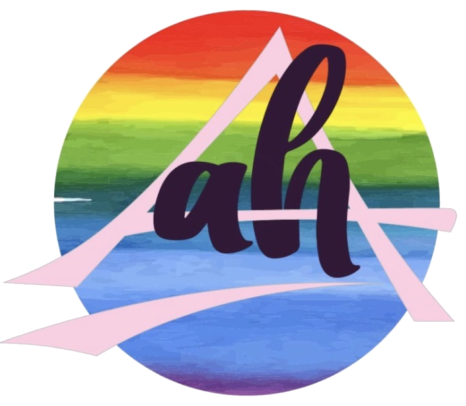

Tradición al Remix
Tradición musical extremeña
⌄
Navidad y tradición oral
Semana Santa
Romerías y fiestas populares
Bailes tradicionales
Exposición de instrumentos tradicionales
Tradición internacional
⌄
Carnaval
Halloween
De la palabra tradicional al remix
⌄
Poesía antigua llevada a lenguajes actuales
Rap recitado
Tradiciones de otros territorios de España
⌄
Burgos: IES Conde Diego Porcelos
Músicas que viajan
⌄
Erasmus con alumnado: Eslovenia
Acogida Erasmus: Isla Reunión
Movilidad docente: Tahití / Polinesia Francesa
eTwinning: tradiciones compartidas
SoundLab